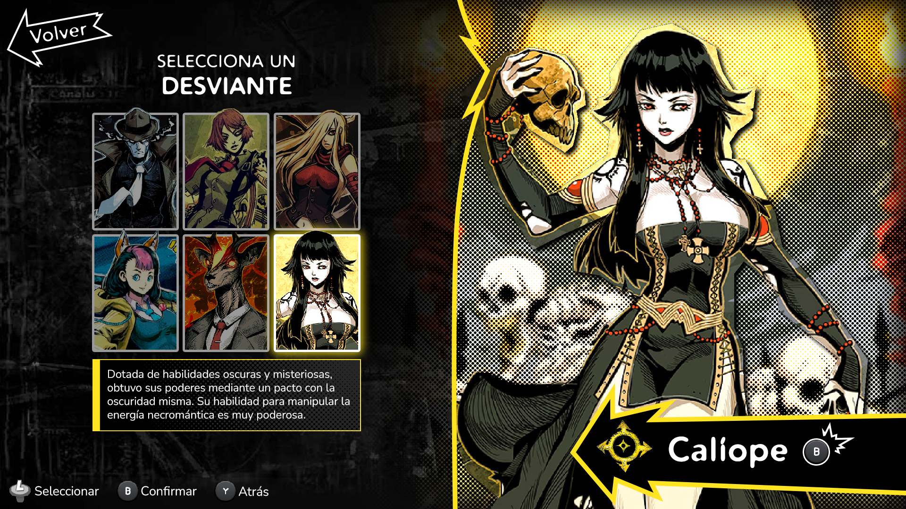
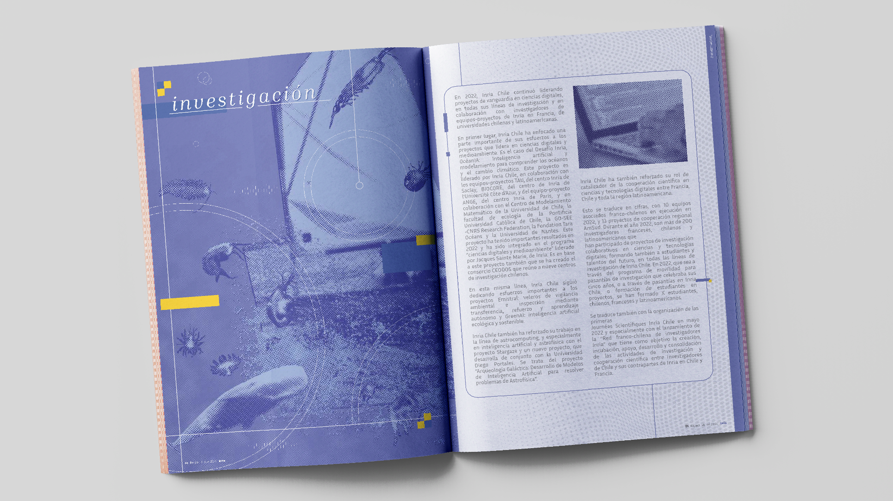

Part of my career has also been spent doing graphic design, which is integral for any type of digital media.

Logo Designs
One of the main Graphic Design skills is Logo
Managing the cognitive load of observers was a significant focus, considering the Observatory comprises more than 65 systems and subsystems, with over 50k telemetries being published every second.

The Design Process
One of the main challenges was developing LOVE simultaneously with the construction of the Observatory, leading to a lack of clarity regarding requirements and a constantly evolving context. This was exacerbated by the fact that the Observatory involved continuous improvements in designing, building, and implementing different instruments. To mitigate this, the design process for the development of the new LOVE component involved a systematic approach comprising four key phases.
Phase 1: Research & Documentation
In the initial phase, the team conducted extensive research and documented information related to the device that the new component would monitor. This involved gathering data on the device's usage and reviewing design papers. Once enough information was collected to grasp the basics, interviews were conducted with experts responsible for designing and building these devices. This aimed to gain a profound understanding of the device's importance, the type of data and information deemed crucial by experts, and insights from operators and observers regarding what they considered essential to visualize. Assimilating these insights formed a foundational understanding of the device's functionality and user expectations.
Phase 2: Information Mapping and Collaborative Sketching
Building upon the insights gained in the research phase, the focus shifted to creating visual representations that mapped the flow of information and user journeys. This phase also aimed to illustrate the intricate relationships between the various elements of the complex devices. Once the information architecture was untangled, and the main objectives of the component were identified, the team engaged in collaborative sketching sessions to produce wireframes. This collaborative process fostered creativity and collective input, refining ideas and ensuring a holistic understanding of the component.
Phase 3: Mockups and Design Validation
Detailed mockups based on the wireframes and diagrams from the previous phase were created. This step involved fine-tuning design elements through close collaboration with users, experts, and developers. Design validation was a key aspect, ensuring alignment with end-user expectations and technical feasibility. Iterative feedback loops during this phase were crucial for refining the design and addressing potential challenges.
Phase 4: Implementation Preparation
With the validated design in hand, the final phase focused on preparing all elements for seamless implementation by the development team, which I also was a part of. This included creating a comprehensive set of design specifications, documentation, and assets. Clear communication and collaboration with my fellow developers was paramount to ensure a smooth transition from design to implementation.
By diligently progressing through these four phases, our team successfully navigated the design process, combining research, collaboration, and validation to deliver a well-crafted LOVE component ready for implementation.

The Implementation Process
We adopted an agile development methodology, leveraging the implementation of an MVP that was strategically released into a dedicated test area. The continuous integration process, orchestrated through GitHub and Jenkins, allowed users to validate the component iteratively. This approach ensured a dynamic and responsive development cycle, fostering adaptability and swift adjustments based on user feedback.
However, even with a successful final release, the dynamic nature of the project, the observatory being still in the construction phase, occasionally led to changes in scope during the verification process. While this is a common aspect of evolving projects, it did necessitate additional work. These challenges prompted us to address these pitfalls of evolving requirements and refine the design and implementation system for optimal performance.
Testing
Rigorous testing procedures were implemented to validate the functionality and performance of the GUI. One noteworthy aspect of our testing strategy was the recreation of the proposed control room and the creation of a small robotic telescope—a model Main Telescope—to simulate real-world operations and thoroughly assess various features while the real thing was being built.
To replicate the conditions of the actual Main Telescope, we meticulously designed and constructed a scaled-down robotic version. This model emulated basic aspects of the Main Telescope's functionalities, allowing us to simulate commands, data transfers, and responses within a controlled environment.
Testing was an iterative process, with each phase informing subsequent refinements to the GUI and the testing environment. Continuous feedback loops were established to address any issues identified during testing promptly. This approach allowed us to fine-tune LOVE to meet the dynamic demands of observatory operations effectively.
UX for Astronomy
LOVE stands as a pivotal graphical user interface developed to meet the unique requirements of Observers and Experts at the Vera C. Rubin Observatory. This GUI not only facilitates remote operation of the Main and Auxiliary telescopes but also serves as a comprehensive visualization platform for the copious amounts of data processed by the Observatory.
Being an integral part of the Vera C. Rubin Observatory, LOVE plays a fundamental role in the successful operation of this massive telescope. The challenge of designing components amid the construction phase required a systematic and adaptive approach, a challenge embraced with enthusiasm.
The Observatory's complexity, with continuous improvements and evolving instruments, necessitated a robust design process. The four-phase approach proved instrumental in navigating the uncertainties and dynamic nature of the project. The continuous integration process, supported by GitHub and Jenkins, allowed for iterative user validation and adjustments based on real-time feedback.
While the dynamic nature of the Observatory's construction occasionally led to changes in scope during verification, these challenges were met with a proactive approach. Adapting to evolving requirements, refining designs, and optimizing the implementation system became essential for maintaining optimal performance.
I am profoundly grateful to have had the opportunity to contribute to something as groundbreaking as LOVE for the Vera C. Rubin Observatory. Working on this project has been a source of joy and fulfillment, and I am privileged to have collaborated with a team of dedicated individuals in the pursuit of advancing scientific exploration. As the Observatory continues to evolve, so too does LOVE, a testament to the collaborative spirit and adaptability of our team in the face of dynamic challenges.